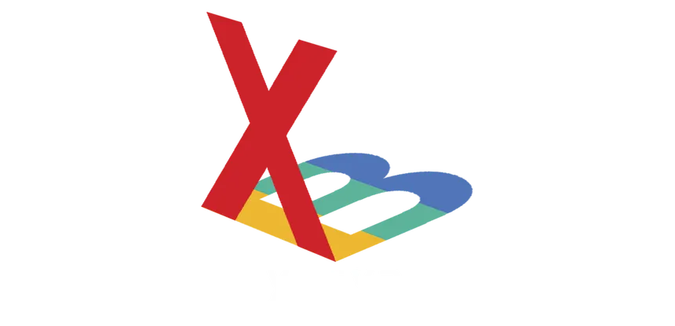

XBSX2 is a fork of PCSX2, a free and open-source PlayStation 2 (PS2) emulator. This project allows you to emulate PS2 hardware on Xbox, enabling you to play your favorite PS2 games with added features and improvements.
GitHub: XboxEmulationHub/XBSX2
